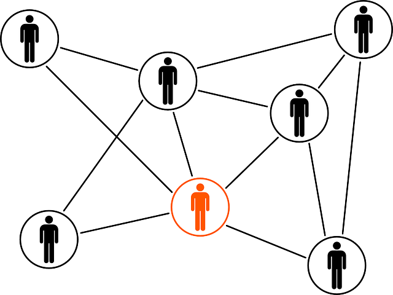

We believe security software like Whonix needs to remain Open Source and independent. Would you help sustain and grow the project? Learn more about our 14 year success story and maybe DONATE!
Qubes/UpdateDocumentationQubes/Tor
BrowserPrevious page:
Qubes/UpdateIndex page:
DocumentationNext page: Qubes/Tor
Browser
Qubes-Whonix™ Tor Connectivity and sdwdate Troubleshooting

Troubleshooting Tor, Network and sdwdate Issues with Whonix
Introduction
Occasionally, Qubes-Whonix user are reporting connectivity issues as well as sdwdate issues. However, a lot issues Qubes-Whonix connectivity issues are unspecific to Whonix. These issues are often misattributed to Whonix.
Even though the issue is happening inside Whonix, the cause is most
often unrelated to Whonix source code. Qubes is developed by Qubes OS Project, which is an
independent entity. The is the norm in Linux distributions. To learn
more about such relationships see
 Linux User Experience versus Commercial Operating Systems. A different
issue could be a Network
Obstacle.
Linux User Experience versus Commercial Operating Systems. A different
issue could be a Network
Obstacle.
Whonix does integration work Whonix integrated into the Qubes
platform. To use a simple analogy, Whonix stays "on the outside". Very
few modifications are made to Qubes through Qubes dom0 package qubes-core-admin-addon-whonix
as described for developers in the Qubes-Whonix qvm-tags chapter.
In the past, Qubes was released with some "strange" connectivity bugs such as this.
A Qubes user might think the user has updated Qubes which should include bug fixes but actually the update might not have happened due to Qubes Updater issues. See Qubes-Whonix/Update.
To remedy this kind of issue, there are a few approaches.
Qubes sdwdate specific
It is often suspected that sdwdate might be the cause.
This is unlikely. No issues are reported for Whonix on other platforms such as Whonix for VirtualBox which has a magnitude of more users but no (or very rare) similar connectivity bug reports.
sdwdate-gui makes Tor issues in Qubes-Whonix more visible due to its graphical indication and easily accessible logs.
However, at time of writing sdwdate-gui is mostly a unsuitable connectivity troubleshooting tool.
To exclude the possibly that sdwdate is the cause, the user could attempt to disable the autostart of sdwdate.
- info: sdwdate
- try: Disable Autostart of sdwdate
Connectivity Troubleshooting Approaches
Generally
1. The user is encouraged to learn about general (unspecific to Whonix) Qubes Updater issues and make sure updates are really installed. See also Qubes/Update.
2. Connectivity Troubleshooting
3. Tor Connectivity Troubleshooting
Qubes sys-net workaround
Complete the following steps:
- Shut down
sys-whonix. - Change the
sys-whonixNetVM setting fromsys-firewalltosys-net. - Restart
sys-whonix.
This procedure might help, but should not be considered a final solution. [1]
Please report if this workaround helped.
systemd-socket-proxyd
systemd-socket-proxydusing 100% CPU was reported heresystemd-socket-proxydFailed to get remote socket: Too many open filespotentially caused by VM logs filled with "host kernel: xen:grant_table: g.e x still pending" messages #7539
xen:grant_table
- Both,
kernel: xen:grant_table: g.e. redacted still pendingkernel: deferring g.e. redacted (pfn redacted)
- potentially caused by VM logs filled with "host kernel: xen:grant_table: g.e x still pending" messages #7539
suspend resume related
- VM using kernel 5.10.112 unable to resume after suspension #7554
- Windows become unresponsive for VMs that were paused before suspend #7548
Potential fix:
Properly suspend all VMs, not only those with PCI devices #473
clocksource tsc vs xen
Future
The community is encouraged not to wait for Whonix to fix these connectivity issues since this unfortunately is unlikely to happen. This is because Whonix developers are not affected by these connectivity issues, these are non-reproducible issues and sometimes these are caused by already fixed Qubes bugs which are not yet fixed on Qubes due to Qubes Updater issues.
Related Qubes Bugs
Denied: whonix.SdwdateStatuserror message after DispVM has halted- https://github.com/QubesOS/updates-status/issues/2824
will fix most if not all
Denied: whonix.alike issues
- https://github.com/QubesOS/updates-status/issues/2824
will fix most if not all
- Qubes
doesn't backup and restore qvm-tags. Therefore, sdwdate
Deniedmessages can happen. - Switching
qube to Whonix template fails to add
anon-vmqvm-tag, resulting insys-whonix: denied: denied by policy
Unexpected autostart of sys-whonix
If using multiple Qubes-Whonix VMs, the user should make sure to have followed the relevant documentation.
3 components are related here.
- A) Qubes dom0 UpdateVM setting
- B) Qubes dom0 UpdatesProxy
- C) Qubes dom0 sdwdate-gui qrexec settings.
On the Multiple Qubes-Whonix Templates wiki page take special note of the warning box in the UpdatesProxy chapter.
Related:
sdwdate-gui qrexec settings
sdwdate-gui qrexec settings fix
- A) New installation of Qubes R4.2: These steps are very most likely not required.
- B) A fully updated Qubes should not require any of the following steps.
1. 80-whonix.policy
on github (raw)
should look same as /etc/qubes/policy.d/80-whonix.policy in
dom0.
2. The following files are legacy and could optionally be safely removed if step 1 was confirmed.
sudo rm /etc/qubes-rpc/policy/whonix.GatewayCommand
sudo rm /etc/qubes-rpc/policy/whonix.NewStatus
sudo rm /etc/qubes-rpc/policy/whonix.SdwdateStatus
sdwdate-gui qrexec debugging
dom0 journal log file reading
Check, follow dom0 journal log file while reproducing sdwdate-gui qrexec messages.
Look for denied: messages.
In dom0.
sudo journalctl
Or.
sudo journalctl -f
sdwdate-watcher debugging
1. Inside the Whonix-Workstation App Qube.
2. Kill sdwdate-watcher.
sdwdate-watcher is the part of sdwdate-gui which watches sdwdate
events from /var/run/sdwdate folder and notifies the
gateway configured in
/usr/local/etc/sdwdate-gui.d/50_user.conf.
killall sdwdate-watcher
3. Start sdwdate-watcher.
/usr/libexec/sdwdate-gui/start-maybe
4. Restart sdwdate.
This is to produce new sdwdate activity that sdwdate-watcher can observe.
sudo systemctl restart sdwdate
5. See if there are any error messages.
qvm-tags verification
Notes:
- Any commands that follow must be run in Qubes dom0.
- Debugging Qubes qrexec is largely unspecific to Qubes-Whonix. Qubes qrexec debugging instructions from other resources, such as the Qubes website, should also apply.
1 Background information on qvm-tags.
See if you can make head or tail of qvm-tags developer notes. If not, skip this step.
2 Check qvm-tags of Whonix-Gateway™ Net Qube.
Note: Replace sys-whonix with the actual name of
the Whonix-Gateway you are using.
qvm-tags sys-whonix
Expected printout should include:
anon-gatewaysdwdate-gui-server3 Check qvm-tags of Whonix-Workstation™ App Qube.
Note: Replace anon-whonix with the actual name of
the Whonix-Workstation you are using.
qvm-tags anon-whonix
Expected printout should include:
anon-vmsdwdate-gui-client4 Check qvm-tags of Whonix-Gateway Template.
Note: Replace whonix-gateway-18 with the actual
name of the Whonix-Gateway Template you are using.
qvm-tags whonix-gateway-18
Expected printout should include:
whonix-updatevm5 Check qvm-tags of Whonix-Workstation Template.
Note: Replace whonix-workstation-18 with the
actual name of the Whonix-Workstation Template you are using.
qvm-tags whonix-workstation-18
Expected printout should include:
whonix-updatevmSee Also
- Connectivity Troubleshooting
- General Troubleshooting
- Network Obstacle
- Tor
- vanguards
- Qubes-Whonix Development
Footnotes
- ↑ This procedure was useful for Qubes-Whonix R3.2 users, although the Qubes bug report is now resolved: https://github.com/QubesOS/qubes-issues/issues/2141
Categories: Documentation